About Us
Learn more about the Seabrook Nature Reserve Community Action Group and our mission to protect and celebrate the local environment.
Working Groups
Various groups are being formed to take our work forward in specific areas.
WG1: Mission & Objectives
This team will be working on a variety of governance initiatives to ensure the effective management and operation of the Seabrook Nature Reserve Community Action Group.
They are currently working on the following areas:
- Constitution
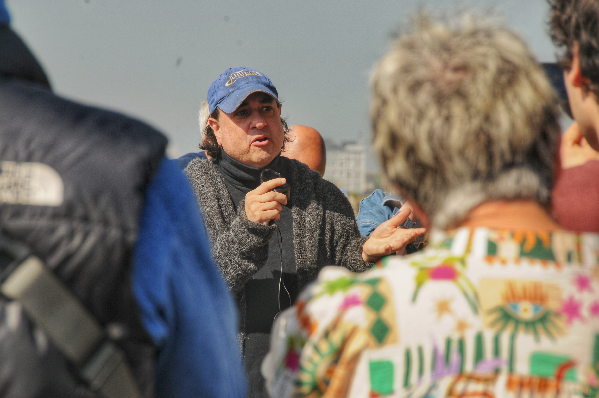
Paul Kadetz
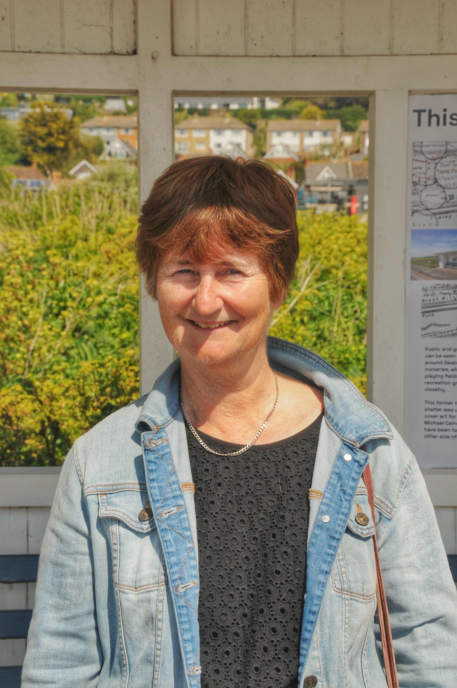
Lesley Whybrow
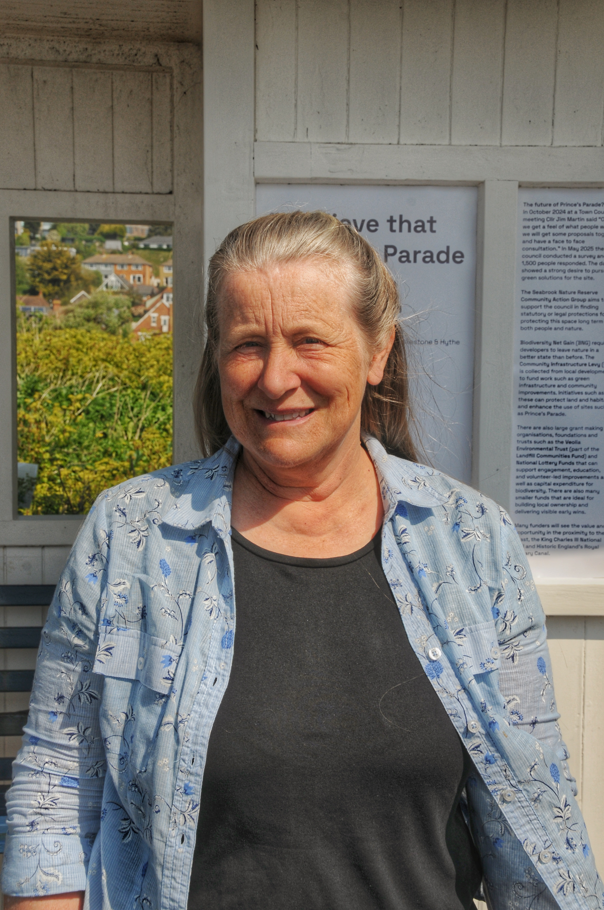
Melanie Wrigley
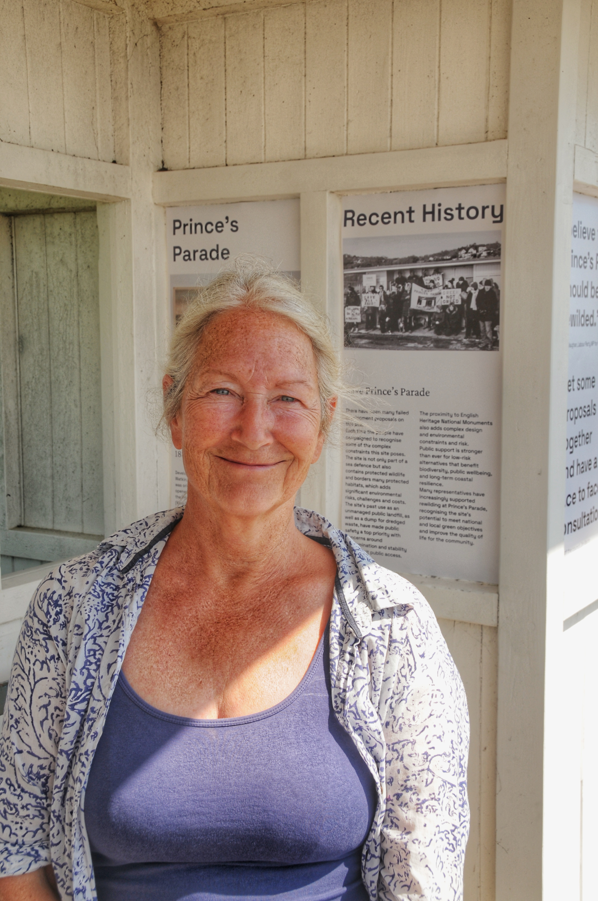
Nicki Stuart
WG2: Research & Evaluation
This team will be working on a Risk register and researching lessons from other locations.
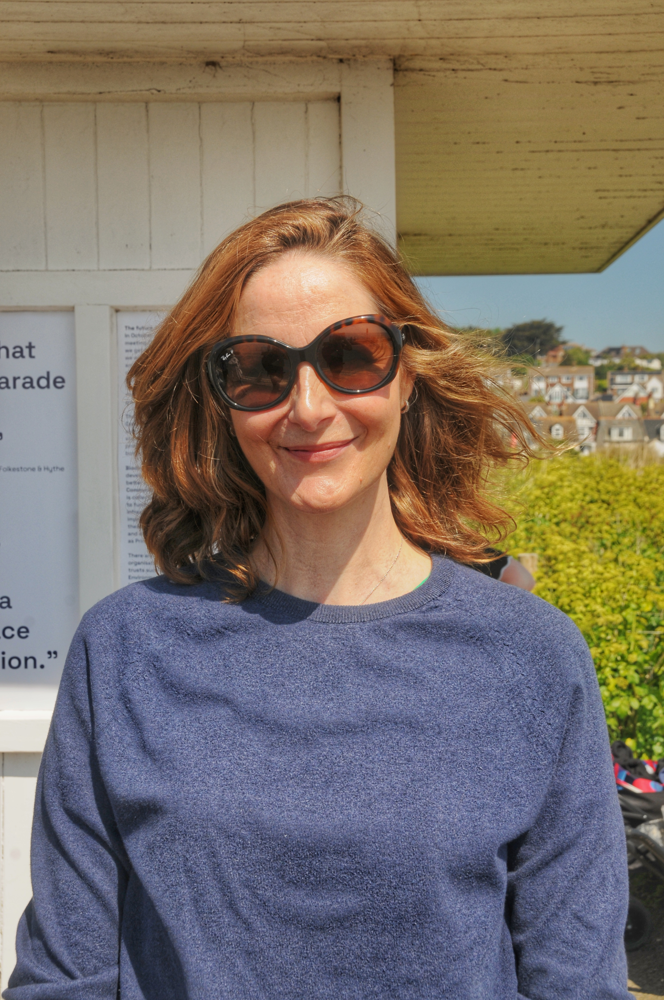
Sarah Carter
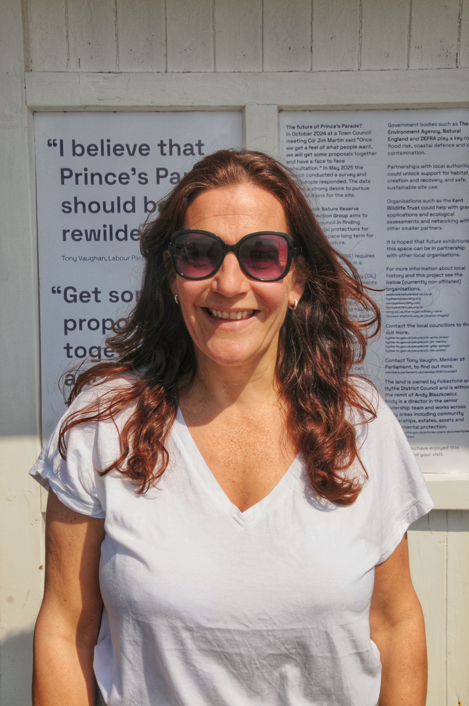
Jo Riley
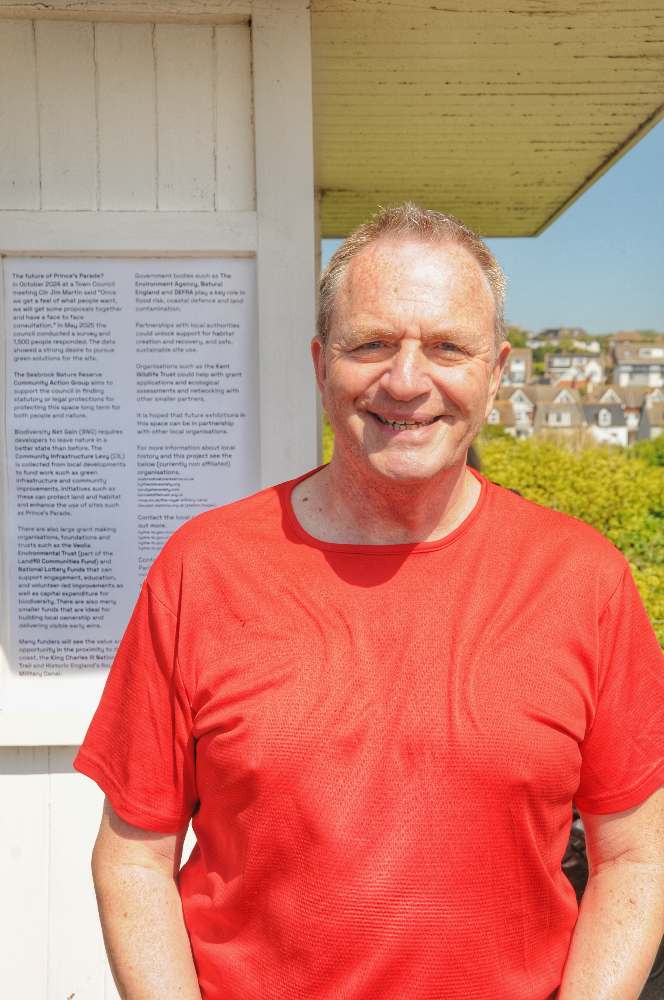
Mark Ridley
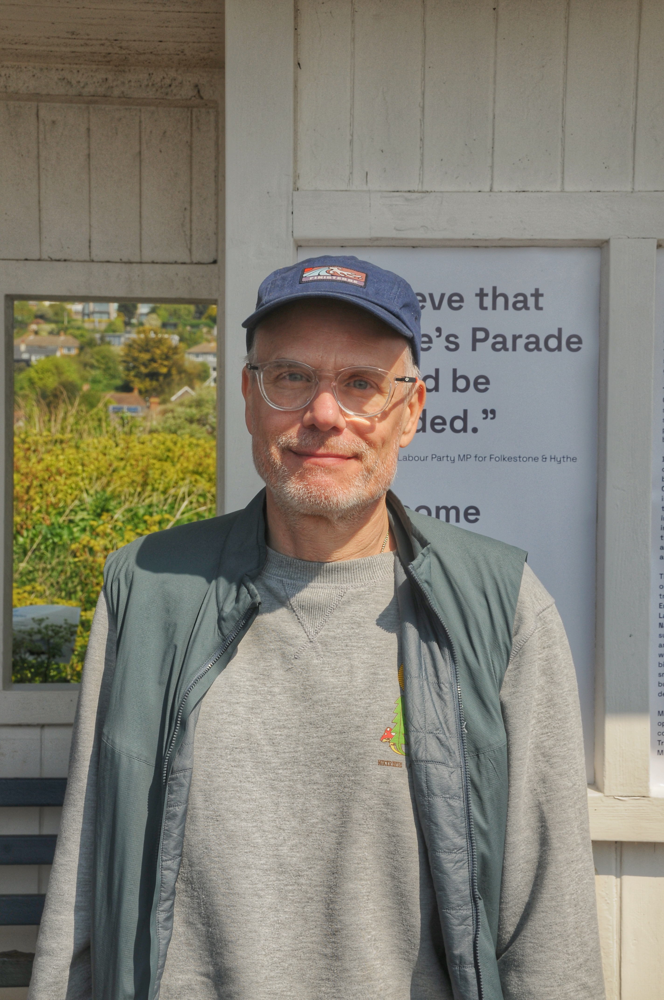
Nick Walme
WG3: Environmental Review
This team will be working on a survey of wildlife across the site and document as well as commission official survey when possible.
Melanie Wrigley
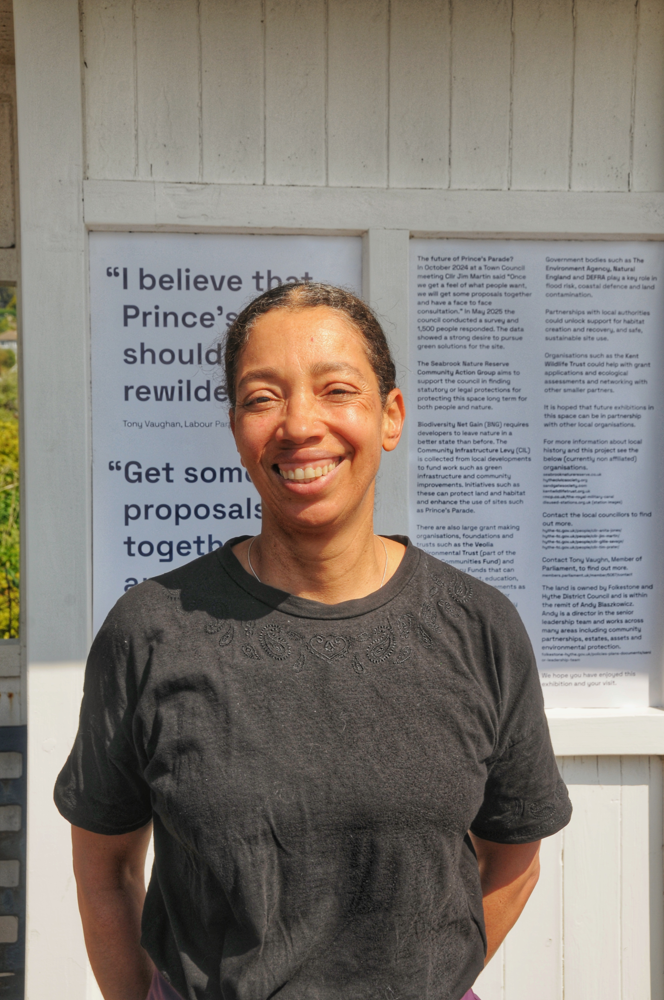
Lucy Ashman
WG4: Brand/Social
This team will be working on a variety of brand, marketing, and social media initiatives to engage the community and promote the activities of the Group.
They are currently working on the following areas:
- Brand Strategy
- Marketing Campaigns
- Social Media Management
- Tone of Voice and Messaging
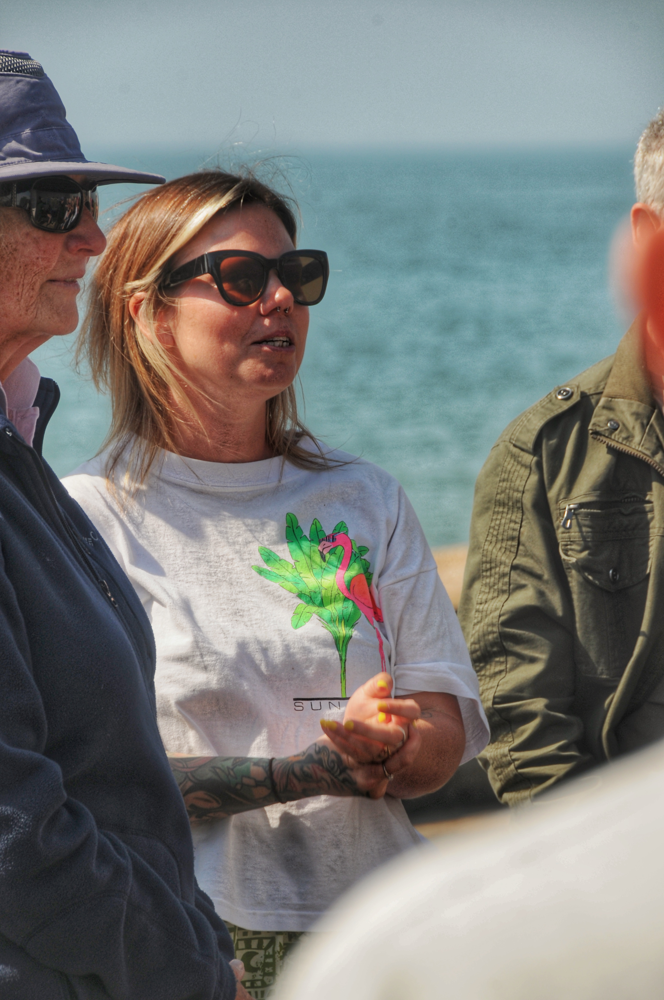
Kim
Sarah
WG5: Education
This team will be creating educational information and building partnerships.
Phil
Projects
Community work is at the heart of our mission, and these projects showcase our commitment to environmental conservation and education.
Project - Documentary Film on Contamination to Conservation
This team will be working on creating a documentary film on the creation and impact of environmental contamination and the subsequent conservation efforts.
They are currently working on the following areas:
- Documenting Meetings
- Interviews
Felix
Project - The Tram Shelter Exhibition Space
This team will be working on creating an exhibition space with rotating exhibits to showcase relevant educational and cultural exhibitions.
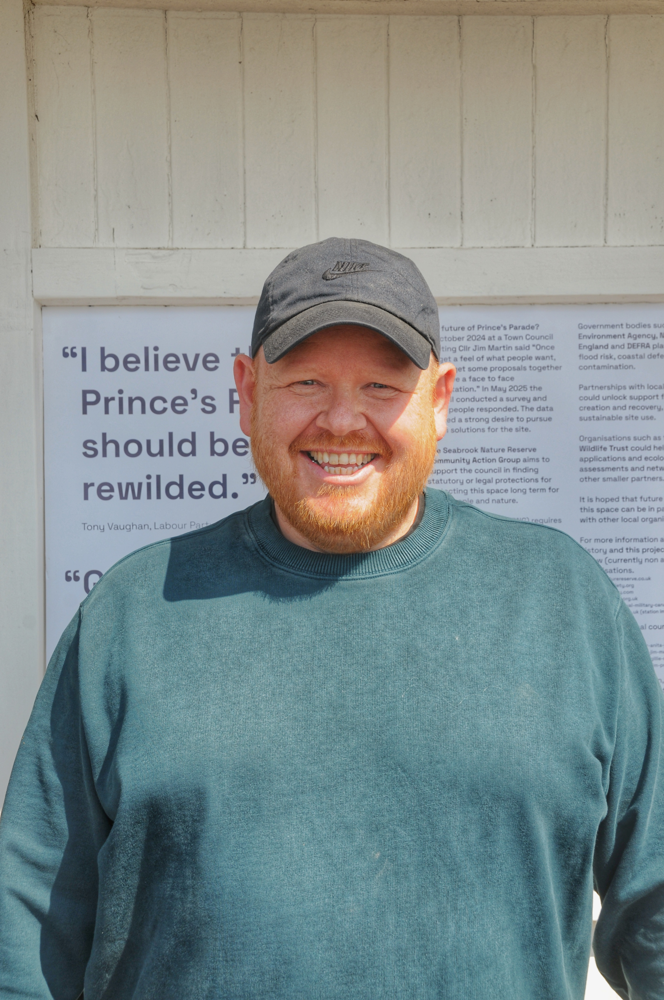
Austin